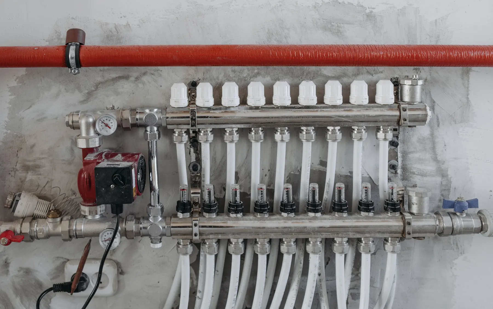
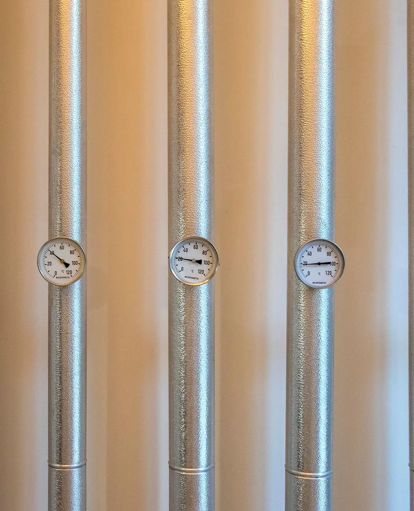

Apkures projektēšana un būvuzraudzība
No siltuma aprēķina līdz siltuma avotam. Būvdarbu laikā vadām vai uzraugām apkures izbūvi.
Ko ietver apkures projekts
Apkures risinājums ir būvprojekta AVK daļā. No tā atkarīgs, cik jaudīgs siltuma avots vajadzīgs un kur ēkā ies cauruļvadi.
- Rasējumi
- plāni ar sildķermeņiem un trasēm, principiālā shēma
- Aprēķini
- siltuma zudumi un hidraulika
- Specifikācija
- iekārtas, caurules un armatūra
- Apraksts
- risinājuma skaidrojums un prasības izbūvei

Siltuma zudumi
Aprēķinām, cik siltuma katra telpa zaudē caur sienām, logiem, grīdu un jumtu un ar ventilāciju. No tā izriet sildķermeņu un siltuma avota jauda.
Sildķermeņi un grīdas apkure
Katrai telpai izvēlamies radiatorus, konvektorus vai grīdas apkuri un nosakām to jaudu un vietu. Grīdas apkurei aprēķinām cilpas un cauruļu soli.
Cauruļvadi un hidraulika
Cauruļvadu trases un diametri, sadalītāji un balansēšanas vārsti, lai siltums vienmērīgi sadalītos pa visām telpām.
Siltuma avots
Siltumsūknis, gāzes, granulu vai malkas katls vai pieslēgums centralizētajai siltumapgādei ar siltummezglu. Izvēli pamatojam ar aprēķinu un ēkas iespējām.
Regulēšana
Āra temperatūras vadīta regulēšana, telpu termostati un apkures zonas, lai telpās būtu vajadzīgā temperatūra bez lieka patēriņa.
Ko pārbaudām objektā
Kā būvdarbu vadītājs vai būvuzraugs pārbaudām, vai apkuri izbūvē pēc projekta. Svarīgāko apskatām, pirms caurules paslēpj grīdā vai sienās.
-
Materiāli un iekārtas
Caurules, sildķermeņi, sadalītāji un siltuma avots atbilst projektam. Ja kaut ko nomaina, nomaiņu saskaņo ar projektētāju.
-
Trases un stiprinājumi pirms aizklāšanas
Cauruļvadi ir projektā paredzētajās vietās, nostiprināti un ar vietu siltuma izplešanās kompensācijai.
-
Spiediena pārbaude pirms aizklāšanas
Grīdas apkures cilpas un cauruļvadus pārbauda ar spiedienu, pirms tos ielej klonā vai aizklāj. Rezultātu ieraksta aktā.
-
Siltumizolācija pirms aizklāšanas
Cauruļvadu izolācija ir projektā noteiktajā biezumā un bez pārrāvumiem, īpaši neapkurinātās telpās.
-
Ieregulēšana
Sistēma ir piepildīta, atgaisota un hidrauliski ieregulēta, un automātika strādā tā, kā paredzēts projektā.
-
Dokumenti
Segto darbu akti, pārbaužu akti un izpildshēmas ir sagatavoti, lai sistēmu varētu nodot ekspluatācijā.
Kādām ēkām
-
Privātmājām
Jaunbūvei vai pārbūvei: grīdas apkure, radiatori, siltumsūknis vai katls.
-
Daudzdzīvokļu mājām
Apkures sistēmas un siltummezgla pārbūve, piemēram, mājas atjaunošanas laikā.
-
Uzņēmumu ēkām
Birojiem, veikaliem, darbnīcām un noliktavām, kur apkure jāpielāgo tam, kā telpas izmanto.
-
Publiskām ēkām
Skolām, bērnudārziem un citām pašvaldību ēkām.
Biežākie jautājumi
Vai privātmājai vajag apkures projektu?
Kādās daļās un cik detalizēti jāizstrādā būvprojekts, nosaka būvniecības normatīvi un būvvalde. Pat ja atsevišķa apkures daļa nav obligāta, aprēķins palīdz izvēlēties pareizas jaudas siltuma avotu un nepārmaksāt par iekārtām.
Kas vajadzīgs, lai sāktu projektēt?
Ēkas arhitektūras plāni un griezumi, ziņas par sienu, logu un jumta konstrukcijām un siltuma avots, ja tas jau ir izvēlēts. Pārbūvei noder arī esošās sistēmas apraksts vai fotogrāfijas.
Kā izvēlēties siltumsūkņa jaudu?
Pēc ēkas siltuma zudumiem, nevis tikai pēc platības. Tāpēc siltumsūkni izvēlamies pēc aprēķina, kas ir daļa no apkures projekta.
Cik ilgi jāgaida projekts?
Tas atkarīgs no ēkas lieluma un no tā, cik gatavi ir arhitektūras plāni. Termiņu nosaucam un par to vienojamies pirms darba sākuma.
Pastāstiet par savu objektu
Kāda ir ēka, kur tā atrodas un kas vajadzīgs: projekts, būvdarbu vadīšana vai būvuzraudzība. Atbildēsim un pateiksim, kas vajadzīgs tālāk.